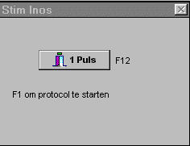
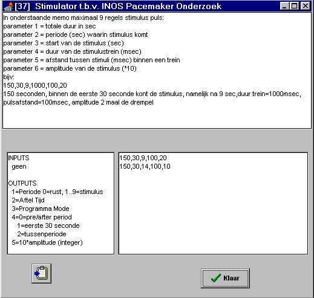

RF 2, Onset Systolische Bloeddruk
|
Functie voor de handmatige en automatische sturing van een stroomstimulator t.b.v. het onderzoek naar de INOS pacemaker. Wordt deze functie gebruikt, dan verschijnt automatisch onderstaand popup scherm. Zoals is te zien in dit popup scherm, kan een enkelvoudige stimulus worden gegeven middels F12, danwel het aanklikken van de knop. Het automatische meetprotocol (gedefiniëerd middels het instelscherm) wordt gestart met F1.

Het hardware uitgangssignaal (TTL positieve puls) verschijnt op alle 4 LSB-bits van de primaire Output poort van een Dash-16 kaart.
In de rustperiode na de stimulus, wordt in output1=periode en output5=stimulus amplitude reeds de waarde voor de volgende stimulus gegeven, zodat bij een handmatige instelling van de amplitude ruim de tijd is voor de juiste instelling.

Inputs: geen 
Parameters: 1..9, regels die een stimulus-rust periode definiëren (zie instelscherm) 
Outputs: zie instelscherm 
© Instrumentele Dienst. Bijgewerkt op 8-12-1999.